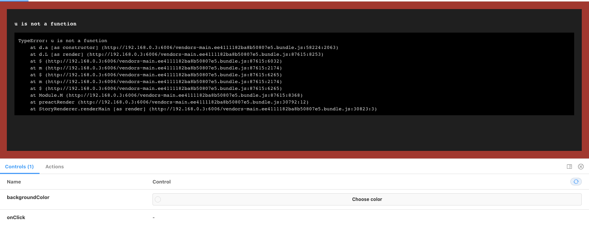
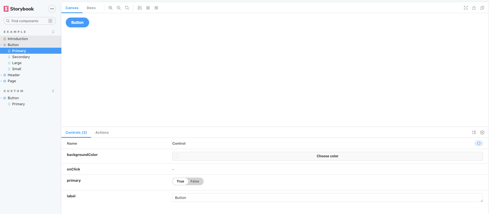

English version is here
preact + TS + goober 環境下に storybook を入れることに苦労したのでその時のメモです。
storybook の作成に失敗する
preact + TS + goober で何かしらのコンポーネントを作ります。
import { h } from "preact"
import { styled } from "goober"
const _Button = styled("button")`
background-color: red;
`
export const Button = () => {
return <_Button>ok</_Button>
}
次にこのコンポーネントの storybook を作ります。
npx sb init
import { h } from "preact"
import { Button } from "./button"
export default {
title: "custom/Button",
component: Button,
argTypes: {
backgroundColor: { control: "color" },
onClick: { action: "onClick" },
},
}
const Template = (args: any) => <Button {...args} />
export const Primary = Template.bind({})
起動させます。
npm run storybook
そして該当のボタンを開くと
h is not defined
ReferenceError: h is not defined
at Object.Template (http://192.168.0.3:6006/main.4bde6a78d76d85c8a393.bundle.js:353:3)
at finalStoryFn (http://192.168.0.3:6006/vendors~main.4bde6a78d76d85c8a393.bundle.js:16622:32)
at http://192.168.0.3:6006/vendors~main.4bde6a78d76d85c8a393.bundle.js:13062:21
at http://192.168.0.3:6006/vendors~main.4bde6a78d76d85c8a393.bundle.js:14861:14
at wrapper (http://192.168.0.3:6006/vendors~main.4bde6a78d76d85c8a393.bundle.js:12801:12)
at http://192.168.0.3:6006/vendors~main.4bde6a78d76d85c8a393.bundle.js:13580:14
at http://192.168.0.3:6006/vendors~main.4bde6a78d76d85c8a393.bundle.js:13594:26
at http://192.168.0.3:6006/vendors~main.4bde6a78d76d85c8a393.bundle.js:13062:21
at http://192.168.0.3:6006/vendors~main.4bde6a78d76d85c8a393.bundle.js:14854:12
at http://192.168.0.3:6006/vendors~main.4bde6a78d76d85c8a393.bundle.js:14861:14

といったエラーが表示されるはずです。
一方で、 npx sb init が生成した examle story は表示されています。

一体どうしてでしょうか。
成功する例とはどのようなものか
まずそもそも preact は storybook 公式でもサポートされています。
FYI: https://www.npmjs.com/package/@storybook/preact
これにより sb init 時に自動生成させることができ、それは問題なく使えます。
そこで自動生成されたファイルを見てみましょう。
/** @jsx h */
import { h } from "preact"
import PropTypes from "prop-types"
import "./button.css"
/**
* Primary UI component for user interaction
*/
export const Button = ({ primary, backgroundColor, size, label, ...props }) => {
const mode = primary
? "storybook-button--primary"
: "storybook-button--secondary"
return (
<button
type="button"
className={["storybook-button", `storybook-button--${size}`, mode].join(
" "
)}
style={backgroundColor && { backgroundColor }}
{...props}
>
{label}
</button>
)
}
Button.propTypes = {
/**
* Is this the principal call to action on the page?
*/
primary: PropTypes.bool,
/**
* What background color to use
*/
backgroundColor: PropTypes.string,
/**
* How large should the button be?
*/
size: PropTypes.oneOf(["small", "medium", "large"]),
/**
* Button contents
*/
label: PropTypes.string.isRequired,
/**
* Optional click handler
*/
onClick: PropTypes.func,
}
Button.defaultProps = {
backgroundColor: null,
primary: false,
size: "medium",
onClick: undefined,
}
生成されたファイルと自分の実装とで大きな差異があるとすれば、
- TS ではなく JS である
- jsx pragma がついている
- CSS in JS を使っていない
という点です。 そしてこれらがまさしく、自分の手元で動かない原因でした。
jsx の設定が必要
/** @jsx h */ とは何か
/** @jsx h */ は jsx pragma と呼ばれている記法です。
これは コンパイラ に jsx を作り出す関数(jsx factory)が何かを伝えることができます。
たとえば react では jsx factory は createElement ですが、それが preact では h であることはコンパイラは知らず、開発者がコンパイラに伝える必要があります。
storybook は babel でビルドする
そして アプリケーション開発時は TS を使っていたとしても、storybook は babel でビルドするため、babel の設定ファイルに jsxFactory が h であることを伝える必要がうあります。 これを実現する方法の一つが jsx pragma ですが、直接 babel の設定ファイルに書くこともできます。 ただし storybook の設定にそれは書かないといけません。
module.exports = {
stories: ["../src/**/*.stories.mdx", "../src/**/*.stories.@(js|jsx|ts|tsx)"],
addons: ["@storybook/addon-links", "@storybook/addon-essentials"],
babel: async options => ({
...options,
presets: [["@babel/typescript", { jsxPragma: "h" }]],
}),
}
ちなみにアプリを開発しているということはすでに TS 側で jsxFacroty の設定はしているはずです。
{
"compilerOptions": {
...
"jsxFactory": "h"
}
}
しかし storybook は babel でコンパイルするのでこの設定は読まれません。 storybook 側の設定に書く jsxFactory の指定をする必要があったという訳ですね。
goober はそもそも setup が必要
いまで使っている goober はアプリケーションのエントリポイントで初期化が必要です。
import { setup } from "goober"
import { h, render } from "preact"
import { Button } from "./button"
setup(h)
const App = () => {
return (
<div>
<Button></Button>
</div>
)
}
render(<App></App>, document.body)
storybook ではその初期化フェーズのコードは呼ばれないので、各 story ファイルで初期化(setup(h))が必要です。
import { setup } from "goober"
import { h } from "preact"
import { Button } from "./button"
setup(h)
export default {
title: "custom/Button",
component: Button,
argTypes: {
backgroundColor: { control: "color" },
onClick: { action: "onClick" },
},
}
const Template = (args: any) => <Button {...args} />
export const Primary = Template.bind({})
storybook ができた
これで
npm run storybook
とすると無事に storybook が表示されます。
ソースコードはこちらです。
https://github.com/ojisan-toybox/preact-storybook